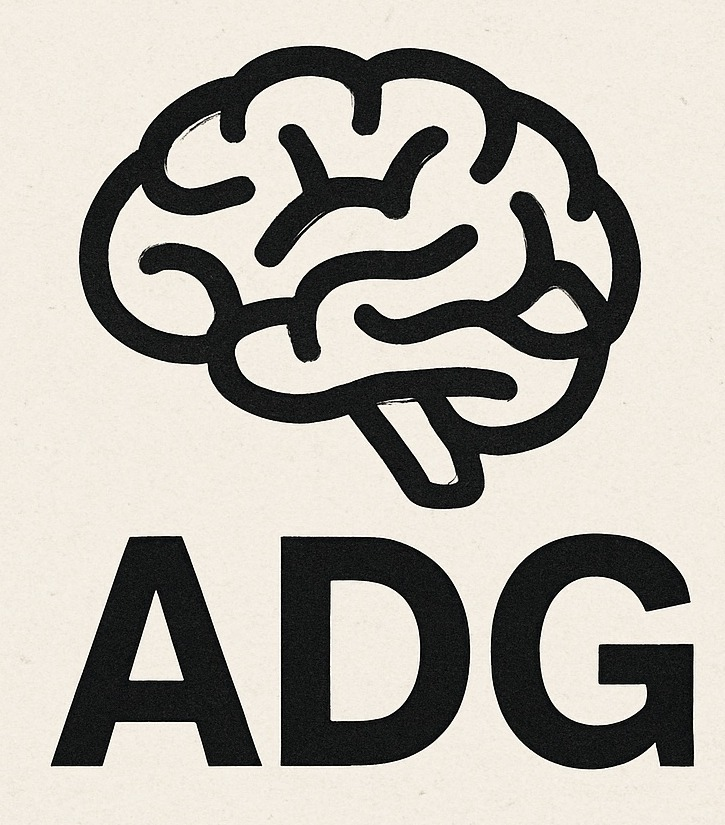
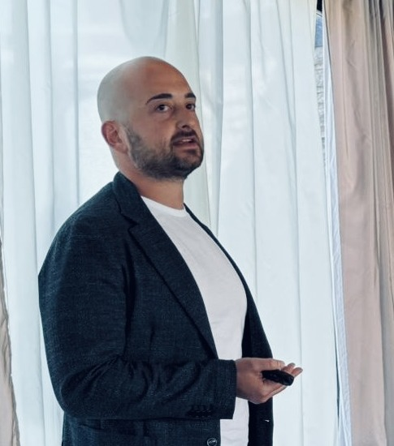

Psichiatria clinica
Valutazione diagnostica e trattamento dei disturbi psichiatrici dell'età adulta.
DOTT. ANTONIO DI GIOVANNI
Psichiatria clinica · Salute mentale territoriale
Disturbi dell'umore · Psicofarmacologia
Avezzano · L'Aquila

PROFILO
Antonio Di Giovanni è Medico Chirurgo, Specialista in Psichiatria e Dirigente Medico presso il Centro di Salute Mentale di Avezzano – ASL 1 Abruzzo.
Svolge attività clinica nell'ambito della psichiatria dell'adulto e della salute mentale territoriale, occupandosi di valutazione, trattamento e presa in carico dei disturbi psichiatrici in integrazione con le altre professionalità dei servizi di salute mentale.
I principali ambiti di interesse professionale comprendono i disturbi dell'umore, la psicofarmacologia e i modelli di assistenza psichiatrica territoriale. Coltiva inoltre un interesse per l'innovazione tecnologica, la Digital Mental Health e le applicazioni dell'intelligenza artificiale alla medicina e alla psichiatria.

ATTIVITÀ E INTERESSI
Valutazione diagnostica e trattamento dei disturbi psichiatrici dell'età adulta.
Presa in carico multidisciplinare, continuità assistenziale e integrazione degli interventi.
Interesse clinico per depressione, disturbo bipolare e condizioni affettive complesse.
Appropriatezza, efficacia, tollerabilità e gestione longitudinale dei trattamenti.
PERCORSO PROFESSIONALE
2025–oggiDirigente Medico Psichiatra · Centro di Salute Mentale di Avezzano, ASL 1 Abruzzo
2025Specializzazione in Psichiatria · Università degli Studi dell'Aquila · 50/50 e lode
2026Relatore · “Depressione in comorbidità: un approccio multidisciplinare tra psiche, cervello e invecchiamento”
2025Relatore · “La Depressione in ambulatorio: Riconoscere Gestire Inviare”
2024Relatore ECM ASL 1 Abruzzo · “Affrontare l'Adolescenza: difficoltà evolutive e percorsi di salute”
2024Formazione EMDR · Livello 1
2020Laurea Magistrale in Medicina e Chirurgia · Università degli Studi dell'Aquila
DOVE LAVORO
Centro di Salute Mentale di Avezzano
ASL 1 Abruzzo – Avezzano Sulmona L'Aquila.
Attività svolta presso le sedi autorizzate della ASL a L'Aquila e Avezzano. Per modalità di accesso e prenotazione si rimanda ai canali ufficiali dell'Azienda sanitaria.
I contenuti di questo sito hanno finalità informative e divulgative, sono pubblicati a titolo personale e non costituiscono comunicazioni ufficiali dell'Azienda sanitaria presso cui il professionista presta servizio. Le informazioni non sostituiscono una valutazione medica individuale.